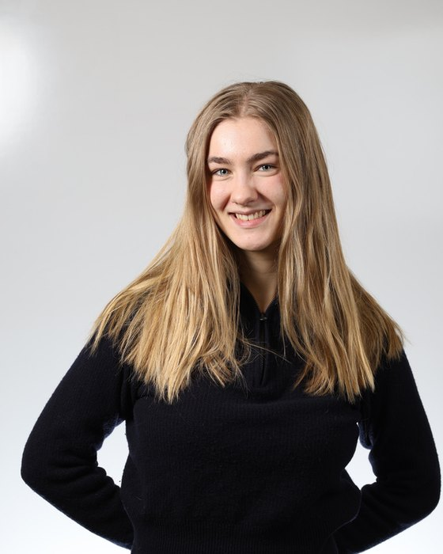

Kulturwissenschaften mit Schwerpunkt Medienwissenschaften an der Leuphana, Führungen im MK&G Hamburg, Social Media
Seit Mai 2026 führe ich Besucher:innen durch die Ausstellung „Foto: Hans Hansen“ im Museum für Kunst und Gewerbe. Angefangen hat das in einem Seminar, in dem wir Räume für genau diese Ausstellung entworfen haben.
Vorher habe ich Inhalte für Social Media und Unternehmen erstellt, ob Bild, Text oder Video: für ein Reise-Startup, eine AdTech-Firma und zuletzt in der Unternehmenskommunikation der ZEIT Verlagsgruppe. Dabei habe ich gelernt, Themen so zu erzählen, dass Menschen dranbleiben, egal welchen Alters, welcher Herkunft oder welcher Interessen.
Der Hamburger Fotograf Hans Hansen hat analog fotografiert. Licht, Perspektive und Komposition hat er im Studio festgelegt, bevor er ausgelöst hat, korrigieren konnte er danach kaum mehr. Genau darum sollte es in unserem Konzept für den Ausstellungsraum „Die Praxis der analogen Fotografie“ gehen.
Ich habe Fotografien aus der MK&G-Sammlung ausgewählt, auf denen seine Kameras, Objektive und Lichtaufbauten zu sehen sind. Dazu kamen Stationen zum Ausprobieren: ein nachgebautes Studio, ein kleines Lichtlabor, eine Camera Obscura und eine Bastelanleitung für eine Lochkamera.
Das Konzept habe ich mit einer Gruppe Dr. Esther Ruelfs vorgestellt, der Kuratorin der Hansen-Ausstellung. Das Feedback war positiv, und kurz danach wurde ich Guide.
Als Studierende wollten wir wissen, wie Museen ihre interne Arbeit digitalisieren können, um weniger Papier und Wege zu verbrauchen. Die Idee zum Interview mit dem Museum für Hamburgische Geschichte, die Durchführung, Videoaufnahme und Schnitt kamen von mir.
Die dreistündige Konversation gab Einblicke, wie Kuratoren mit Medien der Gegenwart und digitalen Artefakten umgehen.
Das Ergebnis aus den Gesprächen, auch mit dem Deutschen Museumsbund: Große Häuser haben meist Geld, viele kleine Projekte laufen nach kurzer Zeit aus. Es fehlen feste Stellen und Schulungen.
Film ansehen (YouTube, 11 Minuten)DARK MATTER, Berlin. Kurzvideo für Explo, 2023. Konzept, Dreh und Schnitt von mir.
2023 war ich für ein Reise-Startup in ganz Deutschland unterwegs und habe Kurzvideos für TikTok und Instagram gedreht. Bei der DARK MATTER Ausstellung in Berlin habe ich gemerkt, wie anders Besucherinnen und Besucher in einer Lichtinstallation reagieren als vor einem Gemälde. Sie bewegen sich, probieren aus, bleiben länger. Die Monet-Projektionen bei Port des Lumières haben mich ähnlich beeindruckt.
Arbeitstitel: „Der Tod der Fotografie im Zusammenhang mit KI-Bildern“. Abgabe bis September 2027.
In den 90ern wurde der Tod der Fotografie schon einmal ausgerufen, damals wegen Photoshop. Ich untersuche, was KI-Bilder heute mit dem Anspruch der Fotografie machen, zu zeigen, was wirklich war.
Mich interessiert dabei besonders, wie Museen künftig über die Echtheit von Bildern sprechen, zum Beispiel in Ausstellungstexten und Führungen.
Mein Lebenslauf in kurz. Die Arbeitszeugnisse schicke ich gern mit.